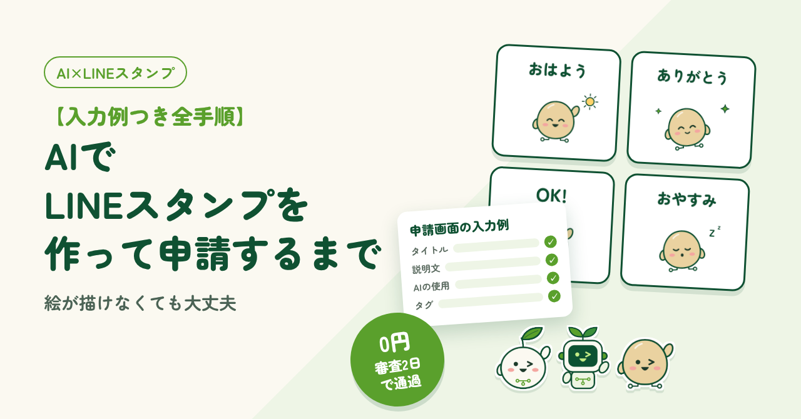
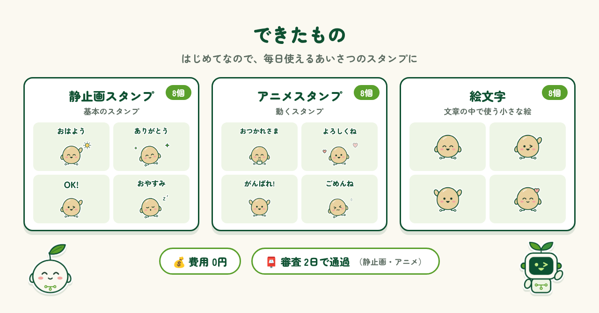
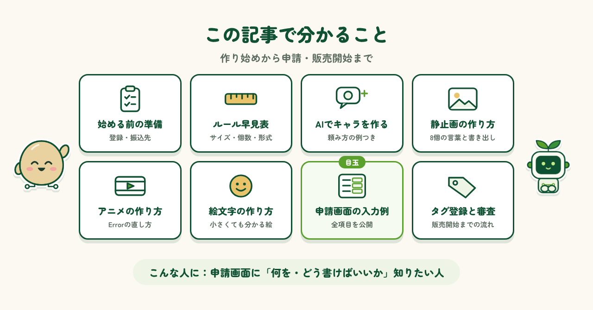

← 制作実績一覧へ戻る
2026.10.25 公開
【入力例つき全手順】AIでLINEスタンプを作って申請するまで
AIでLINEスタンプ（静止画・アニメ・絵文字）を作って、申請・販売開始まで進めた手順の記録です。

はじめに
AIを使えば、絵が描けなくてもLINEスタンプは作れます。私も実際に、静止画・アニメ・絵文字の3種類を作って申請しました。ただ、やってみて感じたのは、手順のところどころに注意が必要だということです。画像のサイズや再生時間の決まりを1つ外すだけで、アップロードできなかったり、何がいけないのか分からないまま手が止まってしまったりします。この記事では、私がつまずいたところも含めて、作り始めから申請・販売開始までの手順を、そのまま真似できる形でまとめました。
できたもの
今回作ったのは、静止画スタンプ8個、動くアニメスタンプ8個、文章の中で使える絵文字8個の3種類です。初めて作るので、奇をてらったものより、毎日のやりとりで使いやすい挨拶のスタンプにしました。「おはよう」「ありがとう」「おやすみ」など、誰に送っても困らない言葉ばかりです。かかった費用は0円。静止画とアニメは、審査に出してから2日で通り、販売が始まりました（絵文字は今も審査待ちです）。絵が描けなくても、ここまでできました。

この記事で分かること
この記事で分かることは、次のとおりです。
- 始める前の準備（登録・振込先）
- 静止画・アニメ・絵文字のルール早見表
- AIでキャラクターを作るときの頼み方
- 静止画・アニメ・絵文字の作り方と、つまずいたところの直し方
- 申請画面の入力例（タイトル・説明文・販売設定など全項目）
- タグ登録と、審査から販売開始までの流れ
特に、申請画面に何をどう書けばいいのか知りたい方に読んでほしい内容です。実際に入力した内容を、そのまま載せています。反対に、自分で絵を描いて売りたい方や、売れるスタンプのコツを知りたい方には向いていません。

制作メモ
段落の構成と文章の下書きはAI（Claude）と作り、各段落に自分の感想を入れて、1段落ずつ確認・修正しました。図もAIと一緒に作っています。